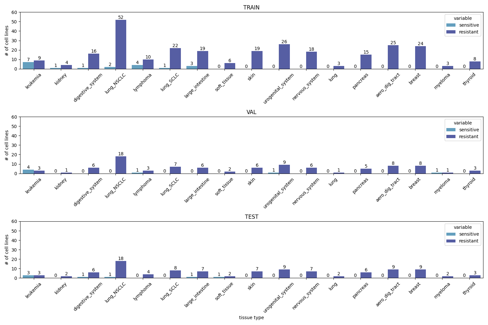
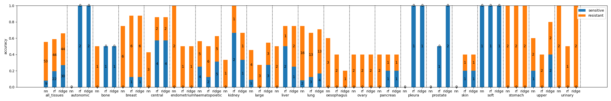
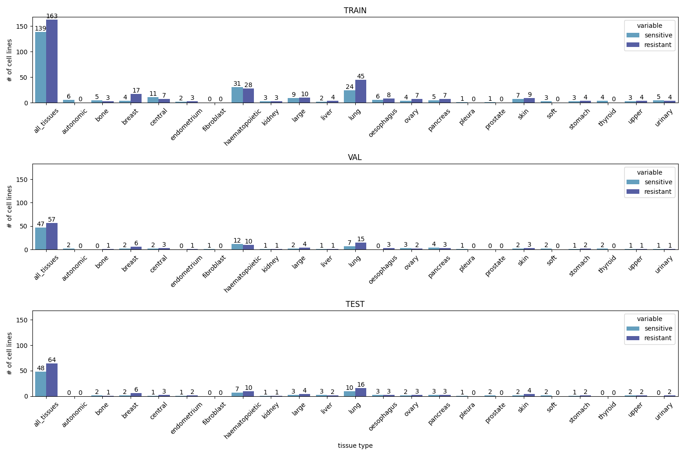

<h1>Report</h1>
<h2>Data Distribution</h2>
<p></p>
<h2>Evaluation - Accuracy</h2>
<p></p>
<h2>Evaluation - ROCAUC</h2>
<h3>(for tissues that contain both                        classes in the testing dataset)</h3>
<p></p>